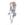

|

Sierra-Falls
Author of 14 Stories |
Unnamed Master: Chapter 12
Still the desert. Still the path. Still the Trainer, and his partner, a Meowth.
"Ow, you stupid gosh darned frigging sun of a gun cactus!"
Still the cactus.
The Vulpix was amused, confused, and intrigued. Yup, she was still here too. The crazy head was following behind the human and his partner by a few yards; close enough to follow, but far enough away not to be seen too readily. Plus, she liked to unnerve the inflated ego that was the feline.
During the day, the Vulpix would trail the duo and make suspicious rustling noises in the underbrush to alarm Dian and make him twitch. While such a technique worked wonders on the cat, the human was another matter. No matter what she did, as long as she didn't attack him, he didn't startle, move out of her way, or try to do anything to her.
Neither did he attempt to capture her in a pokeball. Quite confusing really. He apparently wasn't a conventional trainer.
Whenever the party stopped for camp, the two would go about in a strange duet that efficiently readied the chosen site for sleep, as well as acted as a weird sort of sparring session between the two.
The Vulpix, who always watched from cover, was amazed at the precision and speed they displayed when battling over the food caught during the day, or the bedding provided, or who got to gather the meager wood needed to start the night's fire.
At first, she thought that the trainer was being horribly selfish, trying to hog all of the amenities, but she was soon disabused of the notion. They both were having fun! It was a game to test out reflexes and sneaky tactics. It looked like a lot of fun. Something that she almost wanted to join in.
Life had been lonely for the red-hued pokemon. Her parents killed when she was very young, the crazy chick was abandoned to the harsh desert, since that was the way of life out there. Her life had been a complete struggle for survival, one that she proved all too capable of handling. Perhaps that was why she had very few of the lighter emotions, and those she did have, she embraced whole-heartedly, after accepting them.
But still, the actions of the human and feline were unprecedented. At least in her experience.
The Vulpix also found out that as long as she didn't attack them, she was free to do as she pleased, and if she remained close in the evenings, the human would put out the bowl and fill it with water for her before he went to bed.
After two days of desert travel, a dense line of green showed up just over a rise in the land. It was forest. Something that she had not seen in all her days, but had heard of from other migratory pokemon.
As the little group neared the tall majestic trunks supporting the lush foliage, the Vulpix closed in on the human, and (pardon the pun) dogged his heels.
Ranma only gave her a glance with his blue orbs before seemingly ignoring her. She seemed appreciative of him not taking notice of her fright of the unknown. As they entered the shadowed embrace of the trees, Ranma led the way along a familiar path that the Nidoran had beaten in previous generations.
Finding a suitable tangled knoll of roots, Ranma dropped his pack and let Dian slip lithely off his shoulder to perch next to him. Their twin gazes focused on their following companion, even though she was hidden in the tall grasses to the side of the trail.
"We want to talk with you, if that's ok," Ranma started out.
An exclamation point of surprise could be seen from where the Vulpix hid.
"Dian and I have something we would like to discuss, if its not too much trouble. We aren't going to hurt you, we'll do no surprises, we just want to come to an agreement."
The Vulpix was undecided. She growled out in her dialect to the Meowth, "You are a pokemon, even if under a human's sway. Is he telling the truth?"
Dian looked affronted on Ranma's behalf, despite the fact that the human couldn't understand what was said.
"Of course he's telling the truth! That's why I stay with him. That, and because we are partners. He's not my master, and I'm not his slave. To him, I'm not even a second class citizen."
"Big words, from a Meowth. Bigger claims even. What does he want?"
Dian smirked at the wary fox pokemon. "Don't know yet. Come out of hiding and he'll talk further."
He heard a snort from the grasses and then she pounced into sight.
The past few days had been kind to her, thanks to a regular supply of water, and a decided lack of other predators to watch out for. The Vulpix's ribs still showed, but her coat had a glossy sheen to it that was previously absent.
"Fine," she snarled. "I'm here, what do you two want?"
Dian turned to his head and made an inquiring chirrup. He too wanted to know why they've stopped.
Ranma sighed and ran a hand through his loose hair. "Alright. I'll level with you, Vulpix lady. Where Dian and I are going, might not be a place where you want to be," he started off.
When the fox tensed up, Ranma rolled his eyes.
"Will you cut that out? We're not going to force you to do anything. It's just that there's something that you ought to know before we proceed any further."
The insane she-devil tilted her head encouraging him to go on.
"I live in the forest around here. A few more hours into the trees. Dian and I are partners-,"
The feline interjected a triumphant smirk here in the Vulpix's direction at that statement as Ranma went on.
"- in a venture with the other pokemon around here. In return for a few concessions that Dian hammered out with them, I teach those that are willing the art of fighting. I also won't capture anyone, as so many seem to think I'll do. I just don't like the idea of slaves. Nobody comes to me that is not willing to learn, and those that challenge me, I do not keep against their will. Dian and some of the other tethras will attest to that."
Color her surprised. The human was figuratively in bed with tethras? And several of them in any case? Hmm...
She of the red fur relaxed out of her defensive stance at this revelation. Taking a step toward the pair, she knowingly signified to the human that she understood, and tacitly agreed to follow them anyway.
Ranma saw this, understood what was going on, nodded, and went on talking.
"Like I said, you're welcome to stay with us. Just no attacking the pokemon who enter the clearings for training purposes. The challengers are dealt with on a system that Dian assures me is acceptable, although I don't relish it."
Vulpix turned an eye on the cat at this. She barked at him. "You assured your human? How? By playing charades?" She chuckled in the pokemon's language.
Dian laughed back at her, shaking his head.
"Rranma? New frriend think we no can talk."
Open jawed, dumbfounded, there are other words in the dictionary to describe her expression; it's just that the author does not want to go find them.
The human gives her an amused smile, "Now that that is out of the way, let's get going. I'm sure that the Nidorans have scrounged up some more students and I think that the Pikachus' tethra will want another round with the advanced Neko-ken. What say you, Dian, about kinda sorta possibly throwing the fight so that I could test out her improved speed?"
The human was begging the Meowth, Vulpix now knew of as Dian. Things definitely were different when dealing with this male.
Dian snorted.
"No chance, Rranma. Know rrules. Must defeat Dian if want fight Rranma."
Another mushroom sigh as Ranma hauls his pack up again. He held out an arm in Dian's direction to offer another ride, his attention down the chosen road. The feline got a surprise though. When the cat made as if to springboard from the arm to the shoulder, he was beaten to the punch by a blur of red fur.
Ranma too was surprised at seeing glossy red fur on his shoulder instead of the usual tawny gold. He turned his azure eyes and met with the Vulpix's own golden brown ones. She pulled her lips away from her teeth in what Ranma originally thought was a snarl. When she leaned over and gently nipped his ear, however, Ranma's mind translated that expression as a smile, or a grin.
Dian was miffed. A little scared, but miffed. That was HIS place. That crazed vixen had taken his favorite perch! He would go right up there on the other shoulder and just have her move. It was time she learned her pl-
He eeped. She had just turned her soft look from Ranma and STARED at the cat. Dian could imagine the fires of hell burning in her gaze. Maybe it was time he scouted further ahead. Umm yeah, surely Ranma would appreciate him clearing the path of any hostile pokemon. None of those that might lurk ahead could be scarier than what was perched ever so delicately on the human's shoulder. Surely...
With the human's attention on the path, this Ranma never noticed the by- play that just occurred within the ranks. The Vulpix thought about her situation.
She had protection if she stayed with the human and his 'partner'. This Ranma was guaranteed not to try to capture her. He had mentioned training others in fighting. From what she had seen previously in the past few days, he had a sense of humor. That Dian cat would be permanently nearby for her to tease. And here was the clincher.
The human had helped her when she was in need. No one had ever done that for her before. Even the cat thought that it would be better to leave her behind, but this Ranma would not. The Vulpix almost purred her contentment on Ranma's shoulder as her final decision fell into place.
She would stay with them. She would follow in Dian's footsteps somewhat and fight for Ranma if necessary. But she would not change her nature. Could not. It was a part of who she was, and Ranma accepted that in her. No one would hurt her Ranma. If anyone tried... She would get them.
~-~-~-~-~-~-~-
As the rest of the day passed, the trio flowed through the forest. What pokemon they saw became excited at the sight of the absent wild human and acknowledged him. While they were startled at the sight of another occupying the place on his shoulder, none made mention of it to Dian's face. They whispered though. The Vulpix's hearing caught some of it.
"See that? Ranma's chosen-"
"-another partner-"
"None of the students were good enough-"
"Dian looks really mad."
"What if-"
And from some of the younger pokemon, hiding behind their dams, "Wish I would be chosen..." "Mommy, I wanna learn to fight from HIM. Maybe I can fight the wild human when I'm good enough." "Eh, I can whoop him with both paws in the pokeball and a Persian breathing down my neck...Umm, why are you guys staring at me like that? Its not like a HUMAN could hear me. Uh...Eep!"
That last was an electabuzz trying to impress his friends. He had eeped because of two reasons. One was the angry Meowth hovering directly behind him. The other was because the Vulpix perched on the coveted spot was staring at him directly, even though Ranma passed the group and was going on his way to the cabin. Her eyes, though, stayed with the brash Electabuzz. Warning. Promising. Something painful.
The young Electabuzz gulped, and turned back toward his friends. One from the back of the group spoke up and said, "Somehow I doubt that you'll get a chance to try your skill against HIM. Seems you'll have to go through not only Dian, but that new protégé as well."
The feral human passed out of sight, taking with him the next scariest thing in the forest. Dian followed not too long after, with a smirking grin and a careful memorization of the upstart's face and scent. He would be paying a visit to the Electabuz territories soon. Perhaps he would even offer to take the Vulpix with him. Seems she was good for something after all.
Ten minutes later, Ranma crested the last rise and parted the grasses to the furthest clearing of his home. Tilting his head to indicate the beginnings of civilization, he remarked to his shoulder-mate. "Home sweet Home."
Home, she thought. With someone to come home to...The vixen snorted her approval into his hair, lifting the strands for a second.
Dian pounced and prowled around the mediation clearing before the trio made it past the fire course, the all purpose training meadow, and into the clearing with the cabin and the rough med shack.
Ranma shrugged his shoulder minutely to let his passenger know he was dumping her off, and unslung his pack in front of the barred wooden door.
"Glad I decided to get this put in, eh Dian? If we left it as a leather flap, all of these food bandits would have gotten in." He gestured to the claw marks at the base of the door.
Dian sniffed because he knew Ranma was right. The sniff brought the Vulpix in his sights, and Dian's eyes narrowed in thought. She would have to have a name.
"Rranma?"
"Wha?"
"She need name."
This comment brought the shivery gaze of the Vulpix down upon Dian. She snarled, "I need a name like a scorpion needs iron pyrite."
Dian is bemused. "You know, that actually describes you. Scorpion. Lethal to others. Deranged. I'll tell Ranma your choice."
"What? You little fleabag! I am not going to be called 'Scorpion' for the entirety of my stay here!"
"Of course not, you crazy head. Ranma likes to shorten things. You'll probably end up being called Scorps, or something like that."
Muttering is heard over Ranma's rummaging through their dwelling.
"What was that guys?"
The human centered his look on the Vulpix.
"Did you need something?"
Awww...Shucks. She couldn't be displeased by whatever he decided to call her anyway. Whatever.
Dian saw her capitulation, grinned and leapt up to a nook in the tree that was eye level with Ranma.
"She say want name like 'scorrpion', Rranma."
"A scorpion? Why? She's so sweet. But oh well. If she says so. Hey," he exclaimed, turning to the seated fox. "Would you mind if I called you 'Pio'? Where I come from, some stars in the sky make up a picture that looks like a scorpion, and people just call it Scorpio. If you want, Scorpio could be your name, but Pio could be your nickname. Kinda like Dian is short for Guardian, his whole name."
She thought about this. That was...acceptable. A short yip gave him her approval, but she asked Dian in an aside. "Hey, you. There seems to be a theme going on here. You're Dian, or Guardian. I'm Pio, or Scorpio. What's Ranma short for?"
"You know, I don't know, Pio. He's never told me. Just a moment."
"Rranma? What Rranma shorrt forr?"
The wavy haired martial artist frowned with a crease in his brow. A sad aura crept over the clearing.
"Before I came here, it was short for Ranma Saotome. I don't know if it works like that anymore."
Pio climbed into his lap and braced her paws on his chest. Dian got onto his shoulder and nuzzled his cheek.
"No worrrry Rranma. We find new what Rranma shorrt forr."
Pio thought, 'And woe betide those who made him this sad.'
And the scene closes on this heartfelt landscape.
*_*_*_*_*_*_*_*_*_*_*_*
(A.N. - Well well well. How do you think that Pio will fit in with Ranma and Dian? What is her role in the whole scheme of the Unnamed gym?
Did anyone catch my reference to why scorpions do not like iron pyrite? Anyone know the reason why? Seven brownie points to those who figure it out.
About the previous brownie point question. It was brought to my attention that I might have been vague in the actual question. Well, it was a gimme. I was asking for which chapter I mentioned that Dian originally was a pentethra in his pride. I'm giving a bonus point for any that point out what his pride's name was.
I would also like to take this opportunity to accredit a line from the previous chapter to the one who helped construct it. Much of the inventive cursing is to be attributed to Belgarahs, one of my proofreaders, for whom I am very grateful for. Thanks Garahs, and sorry I forgot to mention this earlier.
Well, Live long and prosper, and don't forget to breed like mutated bunnies. O.o

|
Review this Chapter |